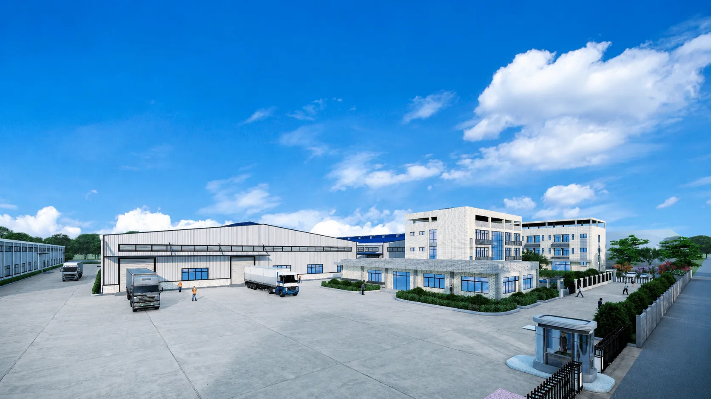

Pabrik, Gudang & Manufaktur
Referensi: Subang Prosperity Hat Factory
Komersial · Industri · Perhotelan · Pusat Data
Lingkup Pekerjaan
Pasar Kami

Referensi Perhotelan — LBR K-017
Portofolio

Industri — struktur + MEP lengkap.

Kantor pemerintah — bersama PT PP (Persero).

Pusat data — MEP kepadatan tinggi.
Mulai — LBR K-01